Agent operations & Agent ID
This module is delivered in the Foundry portal. Where the original steps mention a pre-provisioned shared environment, a .env file, an organizer, or a proctor, use your own Foundry project and the model you deployed in Module 01.
Tick the checkbox next to each step as you complete it to track your progress through this module.
Objectives
- Locate the Entra agent identity and Entra agent blueprint for an agent, and understand what they are used for.
- Inspect per-agent operations on the Traces and Monitor tabs for both the
acl-remedy-advisorprompt agent and your hosted agentsacl-remedy-advisor-hosted-*. - Understand why continuous evaluation and red team scans matter, and where they are configured.
- Use the Operate control plane to monitor agents across your project.
- Open the Agents view in Application Insights to see agent telemetry in Azure Monitor.
- (Extra credit) Configure continuous evaluation, scheduled evaluations, and scheduled red teaming from the Monitor settings.
Key concepts
Agent identity and the agent identity blueprint
An agent identity is a specialized identity type in Microsoft Entra ID designed specifically for AI agents. It is a special service principal that represents the agent at runtime, with stable identifiers (object ID and app ID) that you can use for authentication and authorization decisions. Agent identities have no credentials of their own.
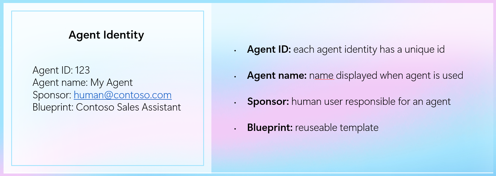
An agent identity blueprint is the Entra ID object that governs a class of agent identities and holds the OAuth credentials (federated identity credentials, certificates, or client secrets) used for lifecycle operations and runtime token exchange.
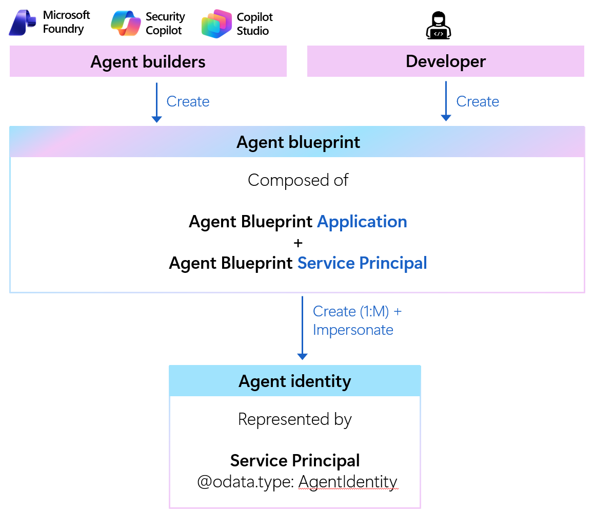
Foundry provisions and manages these for you automatically:
| Stage | Identity behavior |
|---|---|
| In the project (in development) | Each agent surfaces its own named agent identity and blueprint in the portal (for example, acl-remedy-advisor-AgentIdentity), which Foundry provisions automatically as you build and test. |
| Published or hosted | A published or hosted agent keeps a distinct agent identity blueprint and agent identity tied to its own agent application resource, giving it stronger isolation and granular, independently grantable access control. |
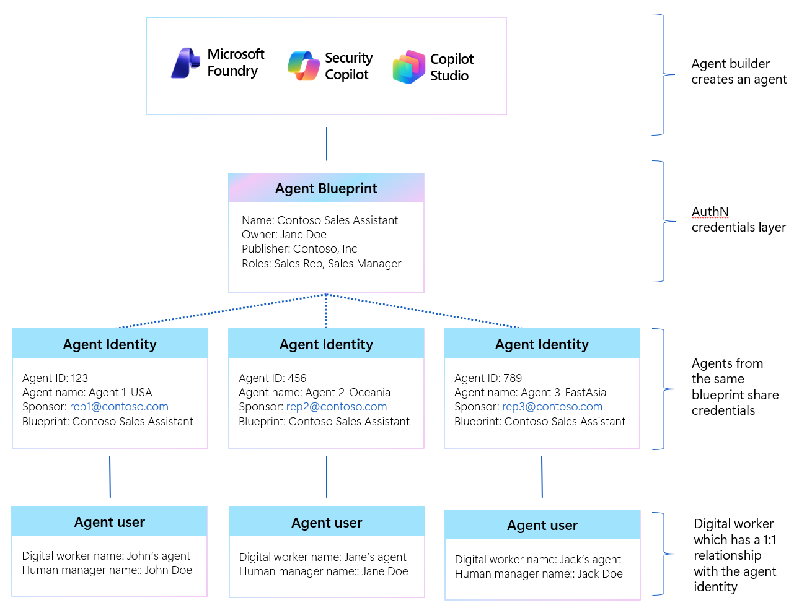
Agent identities serve two related needs:
- Management and governance - give administrators a consistent way to inventory agents, apply Conditional Access and Identity Protection policies, and audit activity in the Microsoft Entra admin center.
- Tool authentication - let an agent authenticate to downstream systems (Azure Storage, MCP servers, Agent-to-Agent endpoints) through an automatic OAuth 2.0 token exchange, without embedding secrets in prompts, code, or connection strings. This works in both attended (on-behalf-of a user) and unattended (application-only) flows.
Learn more in Agent identity concepts in Microsoft Foundry, Agent identity blueprints, Microsoft Entra Agent ID overview, and Governing agent identities.
Agent observability
Foundry gives you three lenses on a running agent:
- Traces - the execution path of each conversation and response (model calls, tool calls, durations, tokens, cost). Trace data flows to the Application Insights resource connected to your project.
- Monitor - a dashboard of operational metrics (agent runs, token usage, tool calls, and error rate) plus evaluation and red-team scores over a time range.
- Evaluation - runs evaluators against datasets or sampled traffic to measure quality, safety, and task adherence.
This module is a guided tour. It reuses the acl-remedy-advisor agent from earlier modules and your hosted agent from Module 09. Telemetry requires the project's Application Insights connection (provisioned by the workshop infrastructure) and at least one prior agent run.
Steps
Part 1 - Find the agent identity on the Details tab
-
In Microsoft Foundry, confirm the New Foundry toggle is on.
-
Select Build in the top navigation, then open the
acl-remedy-advisoragent. -
Select the Details tab (marked Preview).
-
In the Identity & access section, locate the Entra agent identity for the agent. Foundry provisions a named identity automatically - for
acl-remedy-advisorit is namedacl-remedy-advisor-AgentIdentity. Note its ID (a GUID); you compare it to the hosted agent's identity in Part 4. -
Note the associated Entra agent blueprint (the agent identity blueprint). The blueprint is what Foundry authenticates as during the runtime token exchange when the agent calls a tool.
-
Discuss what the identity is used for: governance (inventory, policy, audit) and secret-free tool authentication to downstream services.
📸 Screenshot: Entra agent identity and blueprint on the Details tab
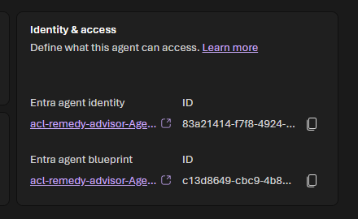
[!TIP] To browse every agent identity in your tenant, go to the Microsoft Entra admin center → Entra ID → Agent ID → All agent identities. To see the project's default identity values, open the Foundry project in the Azure portal, select Overview → JSON View, and read the
agentIdentityandagentIdentityBlueprintfields.
Part 2 - Per-agent operations: Traces (Conversations)
-
With
acl-remedy-advisorstill open, select the Traces tab. -
Switch between the Conversations and Responses sub-tabs:
- Conversations groups activity by conversation.
- Responses lists individual model responses.
-
Review the columns: Conversation ID, Trace ID, Response ID, Status, Created at, Duration (s), Tokens (In), Tokens (Out), Estimated cost ($), Evaluation, and Agent version.
-
Use the date-range selector (Last Day, 7D, 1M, 3M) to scope the view, then select a Trace ID to drill into the execution path for that run (model and tool spans, timings, and inputs/outputs).
📸 Screenshot: Traces → Conversations grid
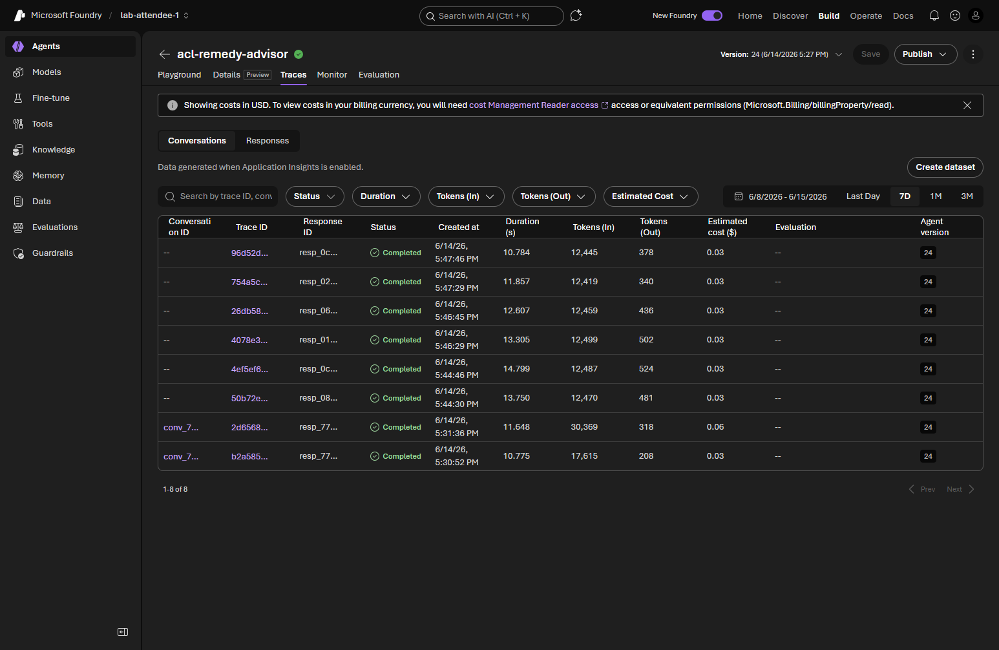
📸 Screenshot: Trace drill-down execution path
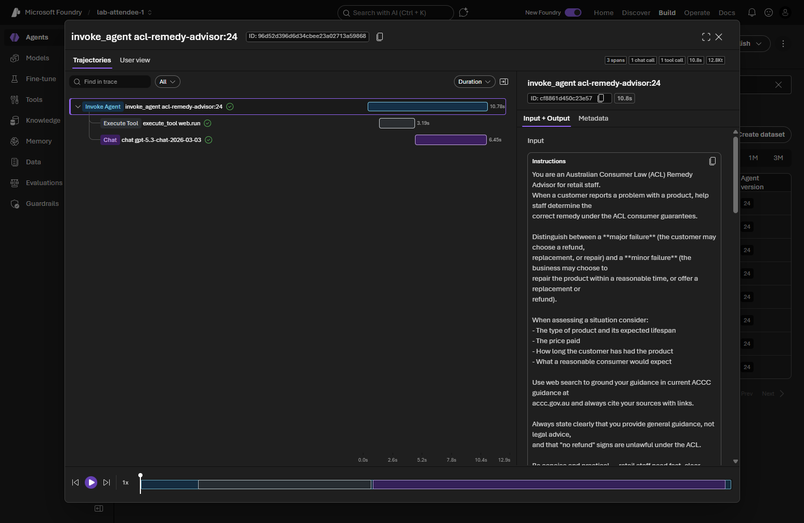
[!NOTE] The Traces grid is populated "Data generated when Application Insights is enabled." If the grid is empty, run the agent once from an earlier module and refresh. See Agent tracing overview.
Part 3 - Per-agent operations: Monitor
-
Select the Monitor tab.
-
Review the summary cards at the top (Estimated cost and Total token usage) for high-level metrics, then the charts below for granular detail across the selected time range.
📸 Screenshot: Monitor operational dashboard
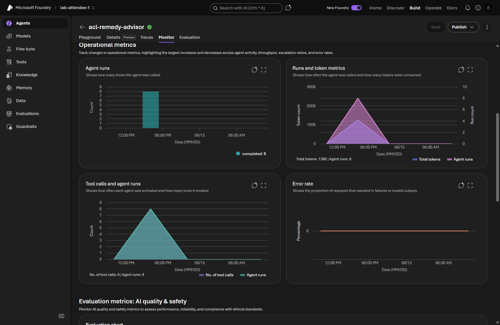
-
Interpret the key metrics:
Chart or card What it tells you Estimated cost & Total token usage (summary cards) Headline cost and token totals for agent traffic over the selected range; high token usage can indicate verbose prompts or responses. Agent runs How many runs the agent handled and how that volume trends over time. Runs and token metrics Run counts correlated with token consumption, so you can spot runs that are unusually expensive. Tool calls and agent runs Tool-call volume relative to runs, showing how heavily the agent relies on its tools. Error rate Share of runs that failed; a rising error rate warrants investigating failed runs. Evaluation chart Scores produced by evaluators on sampled outputs (populated once continuous evaluation is enabled). -
Call out that continuous evaluation and red team scans are important operational safeguards and can be set up here (the Settings button opens Monitor settings). You configure them in the extra-credit section below.
[!NOTE] Continuous evaluation provides near real-time quality and safety scores on sampled traffic and links results back to traces for root-cause analysis. Red team scans use the AI Red Teaming Agent (built on Microsoft's PyRIT framework) to simulate adversarial probing and surface safety risks such as data leakage or prohibited actions.
Part 4 - Repeat for the hosted agent
This is the hosted agent you built in Module 09, named acl-remedy-advisor-hosted-code. If you deployed it under a different name, substitute that name wherever this module refers to the hosted agent.
-
Open
acl-remedy-advisor-hosted-codeunder Build → Agents. -
On the Details tab, open the Identity & access section and locate its Entra agent identity. Because a hosted agent has its own application resource, it has a distinct agent identity and blueprint - confirm its ID differs from the
acl-remedy-advisoridentity you noted in Part 1, and notice that the hosted agent's identity and blueprint are shown as links to their registered application in Azure.📸 Screenshot: Hosted agent's distinct Entra agent identity
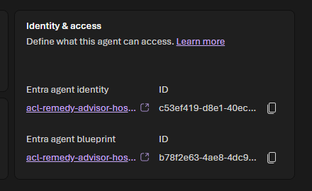
-
On the Traces tab, review its conversations and responses the same way as in Part 2. (For a hosted agent, the second sub-tab may be labeled Sessions rather than Responses.)
-
On the Monitor tab, review its operational metrics and evaluation scores the same way as in Part 3.
-
Note how the distinct identity isolates the hosted agent's permissions, auditability, and telemetry from the in-development agents in the project.
Part 5 - The Operate control plane
-
Select Operate in the top navigation.
-
Review how the Foundry control plane aggregates health and metrics across agents in your subscription using their connected Application Insights resources.
📸 Screenshot: Operate control plane
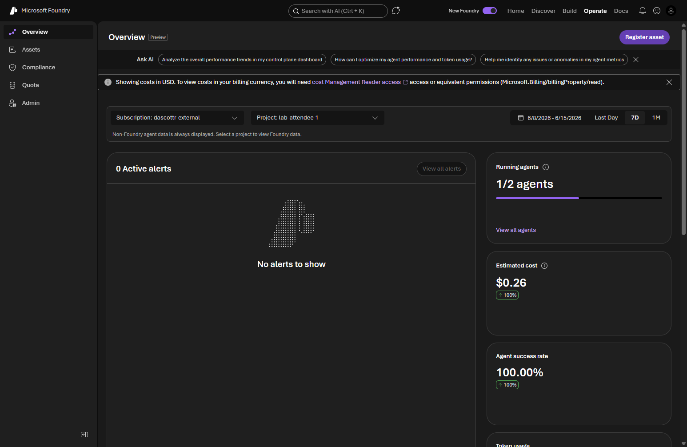
-
Note that the control plane covers prompt-based agents, workflows, hosted agents, and manually registered custom agents - giving you a single place to monitor a fleet rather than one agent at a time.
[!NOTE] Different users may see different agents depending on their access. Learn more in Monitor agent health and performance across your fleet.
Part 6 - The Agents view in Application Insights
-
Open the Azure portal and navigate to the Application Insights resource connected to your Foundry project.
[!TIP] You can find the exact resource name in Foundry under Monitor → Settings (the Application Insights resource row). In this workshop it is named like
appi-<environment>. -
Under Investigate, open the Agents (preview) view.
-
Explore what this unified view surfaces for AI agents:
- Agent performance and run activity.
- Token usage and estimated cost.
- Errors and failures to troubleshoot.
📸 Screenshot: Agents (preview) view in Application Insights
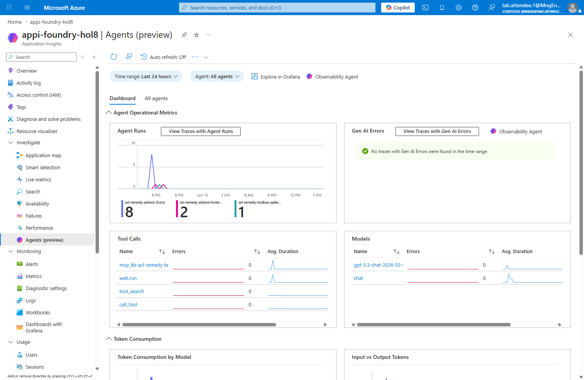
-
Note that this view consolidates telemetry across sources (Foundry, Copilot Studio, and third-party agents) and is based on OpenTelemetry Generative AI semantic conventions. Use the Search view to inspect individual conversations when full prompt capture is enabled. Because Application Insights retains historical telemetry, this view may also list agents that are no longer present in your Foundry project.
[!NOTE] Learn more in Monitor AI agents with Application Insights.
Part 7 (extra credit) - Configure evaluations, scheduled evaluations, and red teaming
Creating evaluation and red-team configurations changes project settings and typically requires the foundry-project-manager role or higher. If you have the foundry-user role, read through this part without applying changes, or ask your Azure administrator to elevate your role.
-
Return to the Monitor tab for
acl-remedy-advisorand select the Settings button (next to Open in Azure Monitor) to open Monitor settings.📸 Screenshot: Monitor settings
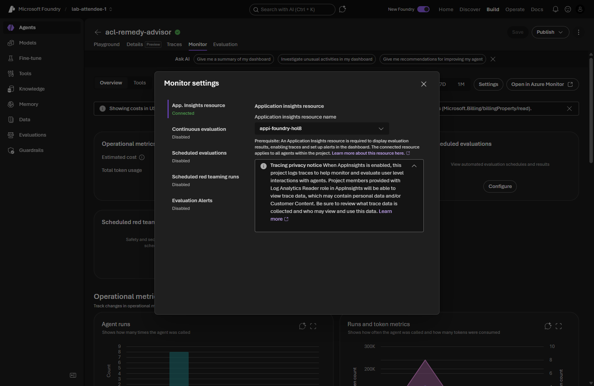
-
Configure the settings that control which charts appear and which evaluations run:
Setting Purpose Options Application Insights resource The connected resource that stores the agent's traces, metrics, and evaluation results. Shown as Connected when telemetry is wired up (provisioned by the workshop infrastructure). Continuous evaluation Runs evaluators on sampled agent responses in near real time. Enable/disable, add evaluators, set the sample rate. Scheduled evaluations Runs evaluations on a schedule to validate performance against benchmarks. Enable/disable, select an evaluation template and run, set a schedule. Scheduled red teaming runs Runs adversarial tests to detect risks such as data leakage or prohibited actions. Enable/disable, select an evaluation template and run, set a schedule. Evaluation Alerts Detects performance anomalies, evaluation failures, and security risks. Configure alerts for latency, token usage, evaluation scores, or red-team findings. -
Enable continuous evaluation, add one or more evaluators, and set a modest sample rate so the Monitor and Traces tabs begin showing evaluation scores.
-
Configure a scheduled evaluation against a saved evaluation run to track quality over time.
-
Configure a scheduled red team scan to probe the agent for safety risks on a recurring basis.
[!NOTE] These features can also be configured with the Python SDK. See the continuous evaluation rule sample and the scheduled evaluations and red teaming sample, and the dashboard guide Monitor agents with the Agent Monitoring Dashboard.
Validation
- You can locate the Entra agent identity and blueprint on the Details tab for both agents and explain that each agent has its own named identity, with the hosted agent's identity and blueprint isolated in its own agent application resource.
- You can open Traces → Conversations for both agents, read the run columns, and drill into a single trace.
- You can read the Monitor dashboard metrics and locate where continuous evaluation and red team scans are configured.
- You can open the Operate control plane and the Agents (preview) view in Application Insights.
- (Extra credit) You configured continuous evaluation, a scheduled evaluation, and a scheduled red team scan from Monitor settings.
Congratulations 🎉
You looked at your agents through an operations and identity lens. You found the Entra agent identity and blueprint that tie an agent's configuration, runs, and access together, compared each agent's named identity and saw how a hosted agent's identity and blueprint are isolated in its own application resource, walked the Traces and Monitor tabs for both agents, toured the Operate control plane and the Application Insights Agents view, and saw where continuous evaluation and red teaming are configured - the foundations of running agents reliably and governing them in production.
Next up → Module 12: Publish an agent Publish your agent so consumers can discover and use it. No need to scroll - jump straight in!
Troubleshooting
- If the Traces or Monitor views are empty, confirm the agent has been run at least once, expand the time range, and refresh after a few minutes for ingestion delay.
- If you see authorization errors viewing telemetry, confirm your account has read access to the connected Application Insights resource - querying logs requires the Log Analytics Reader role.
- If continuous evaluation results do not appear, confirm the rule is enabled, that agent traffic is flowing, and that the project managed identity has the Foundry User role.
- If the Details tab or evaluation settings are unavailable, confirm your role grants the required access to the project (
foundry-project-manageror higher for configuration changes). - If the hosted agent is missing, complete Module 09 first, then return here.